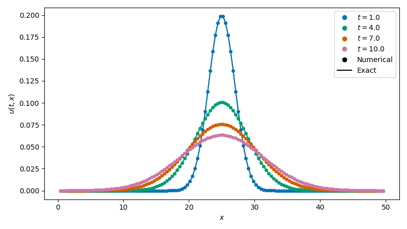

Implicit solver for the heat equation¶
This tutorial demonstrates how to numerically solve an equation of the
form \(\partial u / \partial t = f(t, u)\) using pardax. It covers
spatial discretisation, the solver pipeline, and implicit time stepping.
Problem statement¶
The 1D heat equation is
where \(D\) is the diffusivity and \(u(t, x)\) is the temperature at position \(x\) and time \(t\).
We solve on \(x \in [0, L]\) with homogeneous Dirichlet boundary conditions
Starting from a Gaussian centred at \(x = L/2\),
the heat equation has the analytical solution
for \(t \geq t_0\), which we will use to verify the numerical result.
1. Spatial discretisation¶
We use a uniform finite difference grid with \(n\) interior points
where \(\Delta x = L / (n + 1)\). The boundary values \(u = 0\) at \(x = 0\) and \(x = L\) are enforced through ghost points in the Laplacian stencil.
import jax
import jax.numpy as jnp
def laplacian_dirichlet_1d(u, bc_left, bc_right, dx):
"""Second-order central difference Laplacian with Dirichlet BCs."""
dudx = jnp.diff(u, prepend=bc_left, append=bc_right)
return jnp.diff(dudx) / dx**2
def heat_rhs(t, u, params):
"""Right-hand side: du/dt = D * d²u/dx²."""
return params["D"] * laplacian_dirichlet_1d(
u, params["bc_left"], params["bc_right"], params["dx"]
)
The right-hand side function must have the signature
fun(t, y, params) -> dy/dt. Any additional parameters (D,
bc_left, etc.) are passed as a single params pytree when calling
solve_ivp.
2. Parameters and initial condition¶
# Physical parameters
D = 2.0 # diffusivity
L = 50.0 # domain length
n = 128 # number of interior grid points
dx = L / (n + 1)
# Boundary conditions
bc_left, bc_right = 0.0, 0.0
# Spatial grid (interior points only)
x = jnp.linspace(dx, L - dx, n, endpoint=True)
def gaussian(x, t, D, L):
return jnp.exp(-((x - L/2)**2) / (4*D*t)) / jnp.sqrt(4*jnp.pi*D*t)
t_span = (1.0, 10.0)
y0 = gaussian(x, t_span[0], D, L)
3. Build the solver and integrate¶
In pardax, implicit time stepping is assembled from composable
components:
- A linear solver (AbstractLinearSolver) solves the linear system that arises at each Newton iteration.
- A lineariser (AbstractLineariser) constructs a linear system from the nonlinear residual, using automatic differentiation or a user-supplied Jacobian.
- A root finder (AbstractRootFinder) drives the outer Newton iteration to convergence.
- A time stepper (AbstractStepper) defines the implicit residual and delegates to the root finder.
import pardax as pdx
linsolver = pdx.GMRES(tol=1e-6, maxiter=50)
root_finder = pdx.NewtonRaphson(
lineariser=pdx.AutoJVP(linsolver=linsolver),
tol=1e-6,
maxiter=20,
)
method = pdx.BackwardEuler(root_finder=root_finder)
Because backward Euler is unconditionally stable for the heat equation, we can use a time step much larger than the explicit diffusive CFL limit \(\Delta t \lesssim \Delta x^2 / (2D)\):
t, y = pdx.solve_ivp(
heat_rhs,
t_span=t_span,
y0=y0,
stepper=method,
step_size=1e-1,
params={"D": D, "bc_left": bc_left, "bc_right": bc_right, "dx": dx},
num_checkpoints=2,
)
4. Visualise the results¶
import matplotlib.pyplot as plt
plt.style.use('seaborn-v0_8-colorblind')
colors = plt.rcParams['axes.prop_cycle'].by_key()['color']
fig, ax = plt.subplots(figsize=(8, 4.5), layout='tight')
for i in range(len(t)):
c = colors[i]
ax.plot(x, y[i], marker='o', color=c, markersize=4)
ax.plot(x, gaussian(x, t[i], D, L), ls='-', color=c, alpha=0.7)
# One legend entry per time snapshot, plus a style key
for i in range(len(t)):
ax.plot([], [], 'o', color=colors[i], label=f"$t = {t[i]:.1f}$")
# Dummy entries for the style convention
ax.plot([], [], 'ko', label='Numerical')
ax.plot([], [], 'k-', label='Exact')
ax.legend()
ax.set_xlabel("$x$")
ax.set_ylabel("$u(t, x)$")
plt.tight_layout()
plt.show()
